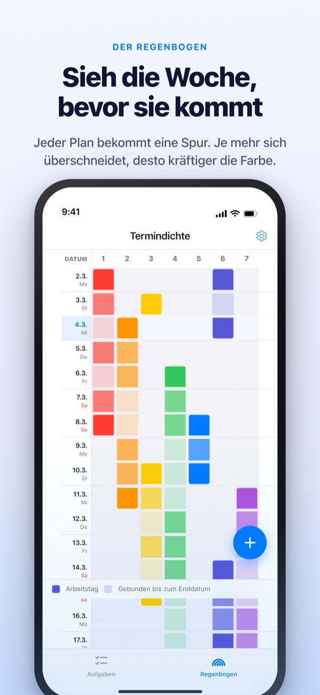
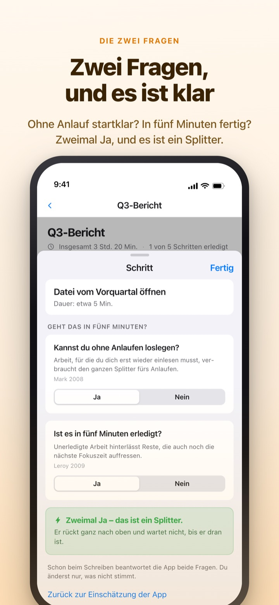
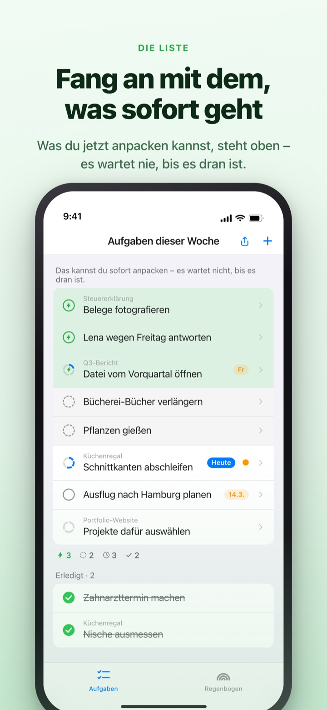
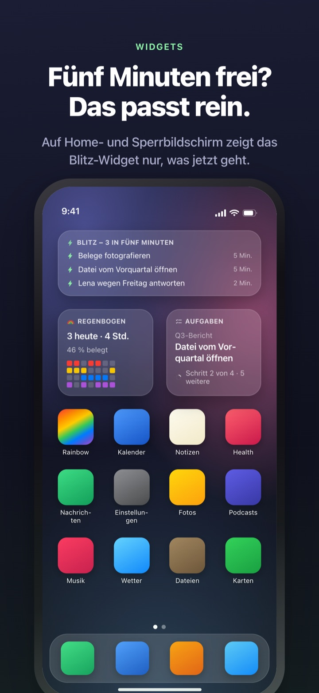

Volle Wochen früh sehen.
Fünf freie Minuten nutzen.
Je mehr sich deine Aufgaben überschneiden, desto kräftiger wird der Regenbogen. Zerlegst du große Aufgaben in Schritte, wartet der, den du in einer Lücke erledigen kannst, schon ganz oben.
Regenbogen, Aufgaben zerlegen, Timer und Abgleich mit dem Mac sind kostenlos.

Probier es selbst
„Quartalsbericht Q3“ ist schon in fünf Schritte zerlegt. Wähle einen Schritt, ändere die Dauer oder dreh eine Antwort um. Nur wer beide Fragen mit Ja beantwortet, wird zum Splitter, den du in fünf Minuten erledigst.
Der Kalender sieht leer aus, und trotzdem kommst du kaum zum Atmen?
Ein Kalender zeigt, ob etwas eingetragen ist, aber nicht, wie viel sich darüber stapelt. Dass drei Abgaben in dieselbe Woche fallen, merkst du oft erst mittendrin, und die fünf Minuten zwischendurch gehen fürs Durchlesen der Aufgabenliste drauf. Rainbow of Desire zeichnet deine Woche als Raster, färbt Überschneidungen dunkler und legt die Schritte für kleine Lücken gleich beiseite.
Zwei Fragen, und es ist klar
Zerlegst du eine große Aufgabe, bekommt jeder Schritt zwei Fragen: Kannst du ohne Anlaufen loslegen? Ist es in fünf Minuten erledigt?
Nur ein doppeltes Ja macht einen Splitter. Die App antwortet zuerst anhand von Dauer und Wortlaut, du drehst eine Antwort nur um, wenn sie nicht passt.

Lücke frei? Schau einfach nach oben
Wisch eine Aufgabe nach rechts und setz einen Blitz: Sie überspringt die Reihe und steht ganz oben. Du musst nicht die ganze Liste lesen, um etwas zu finden.
Ob Schritte aufeinander warten, legst du einmal pro Gruppe fest. Der Reihe nach zeigt den ersten offenen Schritt, Beliebig den Splitter, den du jetzt greifen kannst.

Sichtbar, ohne die App zu öffnen
Der Timer zählt bis zum Ende des Termins herunter, die Restzeit erscheint auch in der Dynamic Island und auf dem Sperrbildschirm.
Widgets für Home- und Sperrbildschirm zeigen, woran du gerade bist, was in fünf Minuten passt und den Regenbogen dieser Woche. (Widgets sind Pro)

In drei Schritten startklar
- 1
Termin ziehen
Halte das leere Feld am Starttag gedrückt und tippe auf den Endtag. Schon steht eine Linie im Regenbogen.
- 2
Große Aufgaben zerlegen
Tippe auf eine Aufgabe, trag die Schritte ein und wähle eine Dauer. Die zwei Fragen beantwortet die App vorab.
- 3
In Lücken nach oben schauen
Splitter und Aufgaben mit Blitz sammeln sich oben, ohne zu warten.
Begriffe, die dir begegnen
- Dunkles Feld · helles Feld
- Tage, an denen du wirklich daran arbeitest, und der Rest bis zum Enddatum
- Volle Zeile
- ein Tag mit so vielen parallelen Dingen, dass eine Verschiebung alles verschiebt
- Splitter
- zweimal Ja; nimm ihn dir vor, wenn fünf Minuten frei werden
- Kurze Fokuszeit
- kein Anlauf nötig, aber nicht in einem Splitter erledigt; einmal hinsetzen reicht
- Fokuszeit
- braucht Anlauf oder dauert 45 Minuten und länger; gehört in freigehaltene Zeit
- Blitz
- deine eigene Markierung für „jetzt sofort“; springt nach oben
- Der Reihe nach · Beliebig
- ob Schritte aufeinander warten, einmal pro Gruppe festgelegt
- Zeitbilanz
- der Wochenabschluss: Übriges, zurückgewonnene Zeit und Erholung, getrennt und nie zusammengezählt
Zeit summiert sich von unten nach oben: Die Dauer einer Aufgabe ist die Summe ihrer Schritte.
Was du für heute brauchst, ist kostenlos
Kostenlos
- Der Regenbogen (Terminraster nach Dichte)
- Aufgaben in Schritte zerlegen, die zwei Fragen
- Blitz und Schrittfolge
- Timer in der Dynamic Island und auf dem Sperrbildschirm
- Abgleich mit Rainbow Craft auf dem Mac über iCloud
- Zeitbilanz der letzten zwei Wochen
Rainbow Plus · Rainbow Pro
- Plus: Terminstatistik und Zeitbilanz über zwei Wochen hinaus
- Pro: alles aus Plus, dazu Widgets für Home- und Sperrbildschirm
- Pro: aus dem Kalender importieren und laufend einblenden
- Pro: Termine teilen, nur zum Ansehen
- Pro: schaltet auch Rainbow Craft Pro auf dem Mac frei
Jeweils als Jahresabo oder Einmalkauf auf Lebenszeit
Bezahlt wird nur fürs Zurückblicken auf vergangene Wochen und fürs Hinaustragen aus der App. Wer Pro früher gekauft hat oder noch ein Monatsabo hat, bleibt Pro.
Häufige Fragen
Brauche ich ein Konto oder iCloud?
Allein nicht. Es gibt keine Registrierung, alles bleibt auf deinem Gerät. Für andere Geräte, die Mac-App oder das Teilen meldest du dich bei iCloud an.
Die App hat eine Frage falsch beantwortet.
Tippe auf den Schritt und stell Ja oder Nein um. Deine eigene Antwort hat immer Vorrang. Mit „Zurück zur Einschätzung der App“ gibst du sie wieder ab. Ein Schritt ohne Dauer zählt nicht als Splitter, weil die App nicht weiß, ob er in fünf Minuten fertig wird.
Kann ich mit anderen teilen?
Per Einladungslink teilst du deine Termine nur zum Ansehen (Pro) oder öffnest eine Aufgabenliste, die du mit den Eingeladenen gemeinsam liest und bearbeitest. Jeder mit dem Link kann beitreten, schick ihn also nur an die richtigen Leute. Mit der Apple-Familienfreigabe hat das nichts zu tun.
Werden meine Kalendertermine angezeigt?
Termine aus den gewählten Kalendern erscheinen im Regenbogen und in der Tagesansicht (Pro). Die App liest nur und schreibt nichts in deinen Kalender.
Kann ich im Widget abhaken?
Widgets sind nur zum Ansehen. Ein Tipp öffnet direkt deine Aufgaben, dort hakst du ab.
Muss ich die Mac-App extra kaufen?
Rainbow Craft ist eine eigene macOS-App im Mac App Store. Mit demselben iCloud-Account gleichen sich Aufgaben und Wochenpläne von selbst ab, und das kostet nichts.
Sind meine älteren Aufgaben noch da?
Ja. Aufgaben, Schritte und eingetragene Dauern bleiben erhalten. Labels aus den alten Startbedingungen bewertet die App mit den zwei Fragen neu.
Wo werden meine Daten gespeichert?
Es gibt keinen Server. Alles liegt auf deinem Gerät und in deiner privaten iCloud, der Entwickler sieht nichts davon. Keine Werbe-ID, kein Standort. Die App sendet nur anonyme Nutzungsstatistiken, die dich nicht erkennbar machen und sich in den Einstellungen abschalten lassen.
Wie kündige ich ein Abo?
In der App Einstellungen unter Apple Account > Abonnements. Ohne Kündigung bis spätestens 24 Stunden vor Ablauf verlängert es sich zum gleichen Preis. Lebenszeit ist ein Einmalkauf.
Hängst du irgendwo fest oder wirkt etwas seltsam? Schreib an leeo@kakao.com. In den Einstellungen der App findest du ebenfalls eine Kontaktmöglichkeit.